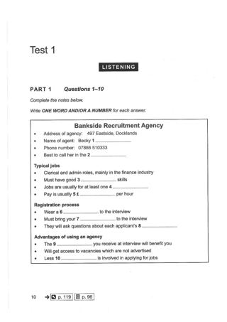
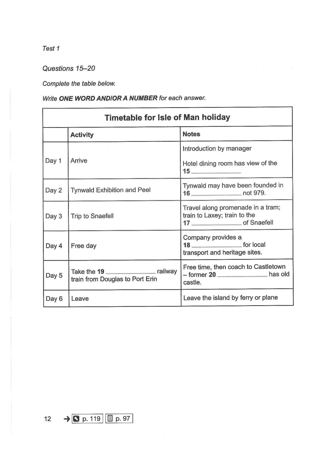
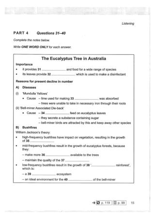
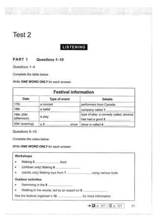
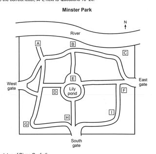
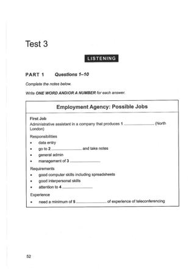
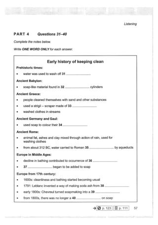
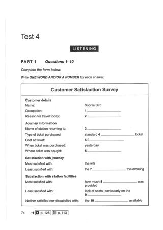
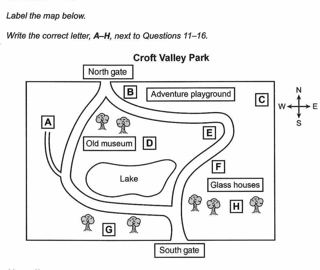
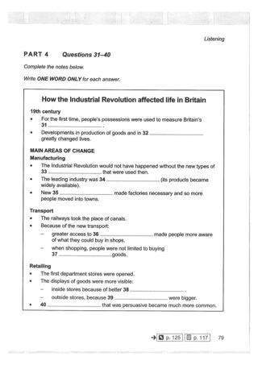

Listening visuals Cambridge 15Reviewed results: 122 confirmed issue records (86 duplicate pairs, 9 sequence inversions, 1 wrong-Part image, 26 clipped images); 23 suspected records. Counts overlap Parts/assets. Full reviewed CSV. Raw audit.json/findings.csv are detector output, not the final defect list. Fallback scope alone is not a defect. OCR ranges are incomplete hints.
All books · Cambridge 15: 16 Parts · exact current resolver outputCambridge 15 / Test 1 / Part 1
No confirmed/candidate defect detected; not a visual PASS
Q[1, 10]: 1 [Part fallback]

#1 OCR Q[[1, 10]] · 1608×2274
Test_1_Listening_PDF_012.jpg / Test_1_Part_1_Bankside_Recruitment_Notes.jpg
assets/public/d744e4d1767553d7453b80982af166eb979fc8ce5b5025c45deced279a087827.jpg
asset-d744e4d1767553d7453b80982af166eb979fc8ce5b5025c45deced279a087827Cambridge 15 / Test 1 / Part 2
No confirmed/candidate defect detected; not a visual PASS
Q[11, 14]: 1 [Part fallback]
Q[15, 20]: 1

#1 OCR Q[[15, 20]] · 1608×2274
Test_1_Listening_PDF_014.jpg / Test_1_Part_2_Isle_of_Man_Timetable.jpg
assets/public/392c6f0d754995de84a5b7a3315af88e59ddea295c8ee6650a61e42004bbbdc2.jpg
asset-392c6f0d754995de84a5b7a3315af88e59ddea295c8ee6650a61e42004bbbdc2Cambridge 15 / Test 1 / Part 3
No confirmed/candidate defect detected; not a visual PASS
Q[21, 26]:
Q[27, 28]:
Q[29, 30]:
No rendered image; structured text only
Cambridge 15 / Test 1 / Part 4
No confirmed/candidate defect detected; not a visual PASS
Q[31, 40]: 1 [Part fallback]

#1 OCR Q[[31, 40]] · 1608×2274
Test_1_Listening_PDF_017.jpg / Test_1_Part_4_Eucalyptus_Notes.jpg
assets/public/0e536766259672c99efcc5eb53549ca3db4ddfebb1113210ef12f860136b035a.jpg
asset-0e536766259672c99efcc5eb53549ca3db4ddfebb1113210ef12f860136b035aCambridge 15 / Test 2 / Part 1
No confirmed/candidate defect detected; not a visual PASS
Q[1, 4]: 1
Q[5, 10]: 1 [Part fallback]

#1 OCR Q[[1, 4], [1, 10], [5, 10]] · 1608×2274
Test_2_Listening_PDF_033.jpg / Test_2_Part_1_Festival_Information.jpg
assets/public/aa1ae17c1a4046d43d131b17bbd845c65fb096732998a0836f3a01a2156b3929.jpg
asset-aa1ae17c1a4046d43d131b17bbd845c65fb096732998a0836f3a01a2156b3929Cambridge 15 / Test 2 / Part 2
No confirmed/candidate defect detected; not a visual PASS
Q[11, 14]: 1 [Part fallback]
Q[15, 20]: 1

#1 OCR Q[] · 1140×1125
Test_2_Part_2_Minster_Park_Map.jpg
assets/public/c8fd097daa49581922dbf579cefffa0599c2b778fcdf555aba6fbbfc80080adf.jpg
asset-c8fd097daa49581922dbf579cefffa0599c2b778fcdf555aba6fbbfc80080adfCambridge 15 / Test 2 / Part 3
No confirmed/candidate defect detected; not a visual PASS
Q[21, 22]:
Q[23, 24]:
Q[25, 30]:
No rendered image; structured text only
Cambridge 15 / Test 2 / Part 4
No confirmed/candidate defect detected; not a visual PASS
Q[31, 40]: 1 [Part fallback]
#1 OCR Q[[31, 40]] · 1608×2274
Test_2_Listening_PDF_038.jpg / Test_2_Part_4_Mozambique_Agriculture_Notes.jpg
assets/public/abc95d44279d92c97ea6ff266fdf9982a1608824148e31c589f4d6b7ba2dffc1.jpg
asset-abc95d44279d92c97ea6ff266fdf9982a1608824148e31c589f4d6b7ba2dffc1 Cambridge 15 / Test 3 / Part 1
No confirmed/candidate defect detected; not a visual PASS
Q[1, 10]: 1 [Part fallback]

#1 OCR Q[[1, 10]] · 1608×2274
Test_3_Listening_PDF_054.jpg / Test_3_Part_1_Employment_Agency_Notes.jpg
assets/public/b8e9d2b3ace840260b97eec12921caf385d11d3877e330d07023d524b4cb47c4.jpg
asset-b8e9d2b3ace840260b97eec12921caf385d11d3877e330d07023d524b4cb47c4Cambridge 15 / Test 3 / Part 2
No confirmed/candidate defect detected; not a visual PASS
Q[11, 16]:
Q[17, 18]:
Q[19, 20]:
No rendered image; structured text only
Cambridge 15 / Test 3 / Part 3
No confirmed/candidate defect detected; not a visual PASS
Q[21, 26]:
Q[27, 30]:
No rendered image; structured text only
Cambridge 15 / Test 3 / Part 4
No confirmed/candidate defect detected; not a visual PASS
Q[31, 40]: 1 [Part fallback]

#1 OCR Q[[31, 40]] · 1608×2274
Test_3_Listening_PDF_059.jpg / Test_3_Part_4_Cleaning_History_Notes.jpg
assets/public/723355ca505baedc8ede0438becbdd82c8610c41dc946d61cef051715a1d15f8.jpg
asset-723355ca505baedc8ede0438becbdd82c8610c41dc946d61cef051715a1d15f8Cambridge 15 / Test 4 / Part 1
No confirmed/candidate defect detected; not a visual PASS
Q[1, 10]: 1

#1 OCR Q[[1, 10]] · 1608×2274
Test_4_Listening_PDF_076.jpg / Test_4_Part_1_Customer_Satisfaction_Survey.jpg
assets/public/f453112570226747fa69bda064034d18eb881bfdd2e012158ab428b00933d8bc.jpg
asset-f453112570226747fa69bda064034d18eb881bfdd2e012158ab428b00933d8bcCambridge 15 / Test 4 / Part 2
No confirmed/candidate defect detected; not a visual PASS
Q[11, 16]: 1
Q[17, 18]: 1 [Part fallback]
Q[19, 20]: 1 [Part fallback]

#1 OCR Q[[11, 16]] · 1210×1020
Test_4_Part_2_Croft_Valley_Park_Map.jpg
assets/public/b8afef06b16caced431bbeb4a936101ff9f0c8a282ae350686bb323cec30b8fb.jpg
asset-b8afef06b16caced431bbeb4a936101ff9f0c8a282ae350686bb323cec30b8fbCambridge 15 / Test 4 / Part 3
No confirmed/candidate defect detected; not a visual PASS
Q[21, 24]:
Q[25, 30]:
No rendered image; structured text only
Cambridge 15 / Test 4 / Part 4
No confirmed/candidate defect detected; not a visual PASS
Q[31, 40]: 1 [Part fallback]

#1 OCR Q[] · 1608×2274
Test_4_Listening_PDF_081.jpg / Test_4_Part_4_Industrial_Revolution_Notes.jpg
assets/public/339b0a9849806cebf521c17b64c39ab419e4bcbf1868fc318dd0a9ee32732e00.jpg
asset-339b0a9849806cebf521c17b64c39ab419e4bcbf1868fc318dd0a9ee32732e00